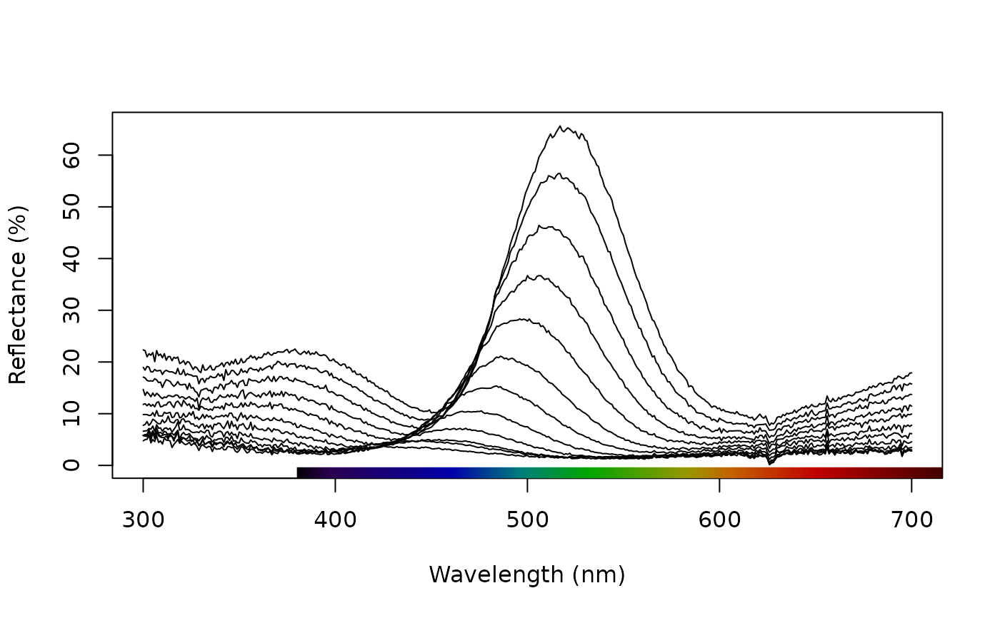

Merges two rspec objects into a single rspec object.
Usage
# S3 method for class 'rspec'
merge(x, y, ...)Value
an object of class rspec for use with pavo functions.
Will use by = "wl" if unspecified, or automatically append wl to the
by argument if one is specified.
Author
Chad Eliason cme16@zips.uakron.edu
Examples
# Load angle-resolved reflectance data for a green-winged teal, and
# split it in two
data(teal)
teal1 <- teal[, c(1, 2:5)]
teal2 <- teal[, c(1, 6:13)]
# Merge the two split datasets back into one, with a shared 'wl' column
teal.mer <- merge(teal1, teal2, by = "wl")
# Examine the results, and compare the original to the (identical)
# reconstructed version
plot(teal.mer)

plot(teal)
identical(teal.mer, teal)
#> [1] TRUE
# Or an equivalent method, which also allows for the merging of more than one rspec
# object at a time (simply add further objects to the list())
teal.mer2 <- do.call(merge, list(teal1, teal2))
# Check equivalence
identical(teal.mer2, teal)
#> [1] TRUE